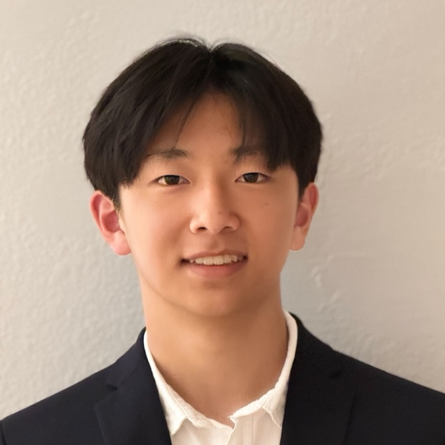

B.S. Chemical Biology · Regents' and Chancellor's Scholar
Inu Cho
Undergraduate in Chemical Biology at the University of California, Berkeley. NREMT-Certified Emergency Medical Technician, materials and diagnostic dental research intern, and hospital clinical volunteer.

Selected Research
All investigations →-
Cone Beam Computed Tomography & Quantitative Percussion Diagnostics
Prepared 50 3D-printed teeth in acrylic mounts for Cone Beam Computed Tomography (CBCT) diagnostic testing and assisted with image analysis to evaluate structural changes. Collected and synthesized experimental data across 30 quantitative percussion diagnostic trials to assess dental structural integrity.
CBCT Image Analysis · Quantitative Percussion Diagnostics2025 -
Materials Science & Marine Hydrogel Formulation
Designed and conducted three independent hypothesis-driven projects across materials science, microbiology, and environmental conservation. Presented novel exopolysaccharide hydrogel reinforcement as a finalist at the Regeneron International Science and Engineering Fair (ISEF). Provided husbandry and specialized care for 12 endangered marine species in the aquatic nursery.
Regeneron ISEF Finalist (2025) · 1st Place Applied Chemistry & 1st Place Environmental Engineering (LACSEF)2023 – 2026 -
Scientific Communication & Student Research Mentorship
Guided junior researchers through the scientific method, project development, and experimental design. Coached students on scientific communication, improving presentations at regional science fairs.
2024 – 2025
Clinical Care & Service
NREMT-Certified Emergency Medical Technician and California licensed provider. Completed a rigorous two-semester emergency medicine training program through SoCal Regional Occupational Center with 30 hours of clinical ride-along experience.
Clinical volunteer at Torrance Memorial Medical Center (100+ hours), transporting patients across departments, supporting nursing discharge, and delivering time-sensitive laboratory specimens.
- CredentialNREMT EMT-Basic · BLS Provider
- Clinical TrainingSoCal ROC (30 Ride-Along Hours)
- Hospital ServiceTorrance Memorial Medical Center (100+ hrs)
- RecognitionPresident’s Volunteer Service Award (Gold)
Academic Leadership & Service
Extensive leadership in national STEM competitions, student advocacy, and community music service across four years.
- CyberPatriotTeam Captain (State Platinum Level)
- Math TeamPresident (PVPHS)
- EngineeringTSA Team Captain (TEAMS National Placement)
- Music ServiceTri-M President & Symphonic Violist
- LanguagesEnglish (Native), Korean (Fluent), Spanish
Origami
View portfolio →
Selected Folding Projects
A collection of origami models folded from metallic foil, elephant hide, and washi paper, including works designed by Satoshi Kamiya, Robert Lang, Beth Johnson, and others.
Explore Origami Portfolio →